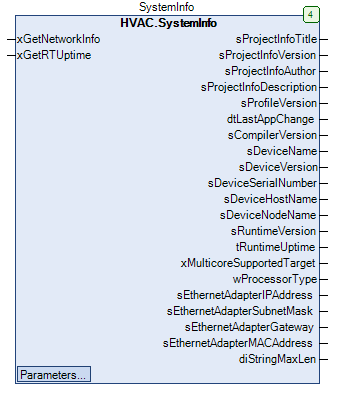

SystemInfo (FB)¶
FUNCTION_BLOCK SystemInfo
Short Description¶
Acquisition of system information / input of individual project information.
Portrayal¶

Functional Description¶
Input xGetNetworkInfo¶
Input xGetRTUpTime¶
Setpoints / Parameters¶
Name Datatype
Range
Init-Value
Functional Description
sProjectNumber STRING 0000 Individual project number for display in visualization
sProjectName STRING(255) HVAC Example Individual project name for display in the visualization
sProjectVersion STRING 1 Individual project version for display in the visualization
sConfigEthernetAdapterName STRING eth0 Name of the network adapter for the network information to be queried
tRefresh interval
TIME T#15S Update interval for requesting network information and system runtime ( T#0s => Disabled)
Codesys¶
- InOut:
Scope Name Type Initial Comment Input xGetNetworkInfo BOOL Query of the current network information of the system ( FALSE > TRUE )
xGetRTUptime BOOL Query of the current runtime of the system ( FALSE > TRUE )
sProjectNumber STRING ‘0000’ Individual project number for display in visualization
sProjectName STRING(255) ‘HVAC Example’ Individual project name for display in the visualization
sProjectVersion STRING ‘1’ Individual project version for display in the visualization
sConfigEthernetAdapterName STRING ‘eth0’ Name of the network adapter for the network information to be queried
tRefreshIntervall TIME TIME#15s0ms Update interval for requesting network information and system runtime ( T#0s => Disabled)
Output sProjectInfoTitle STRING(diMaxStrLen) Title- Field of integratedProject informationsProjectInfoVersion STRING(diMaxStrLen) Version- Field of integratedProject informationsProjectInfoAuthor STRING(diMaxStrLen) Author- field of the integratedproject informationsProjectInfoDescription STRING(255) Description- Field of the integratedProject InformationsProfileVersion STRING(diMaxStrLen) Profile Version which is set during download
dtLastAppChange DT Time stamp of the last Change which was made to the application
sCompilerVersion STRING(diMaxStrLen) Compiler version set during download
sDeviceName STRING(diMaxStrLen) Device-Name sDeviceVersion STRING(diMaxStrLen) Device-Version sDeviceSerialNumber STRING(diMaxStrLen) Device-Seriennummer sDeviceHostName STRING(diMaxStrLen) Device-Hostname sDeviceNodeName STRING(diMaxStrLen) Device-Nodename sRuntimeVersion STRING(diMaxStrLen) Runtime-Version tRuntimeUptime TIME Runtime Runtime of the CODESYS Control Runtime ( not of the application )
wProcessorType WORD Runtime processor type
sEthernetAdapterIPAddress STRING(diMaxStrLen) IP address of the specified network adapter
sEthernetAdapterSubnetMask STRING(diMaxStrLen) Subnet mask of the specified network adapter
sEthernetAdapterGateway STRING(diMaxStrLen) Gateway address of the specified network adapter
sEthernetAdapterMACAddress STRING(diMaxStrLen) MAC address of the specified network adapter
diStringMaxLen DINT Maximum length of strings